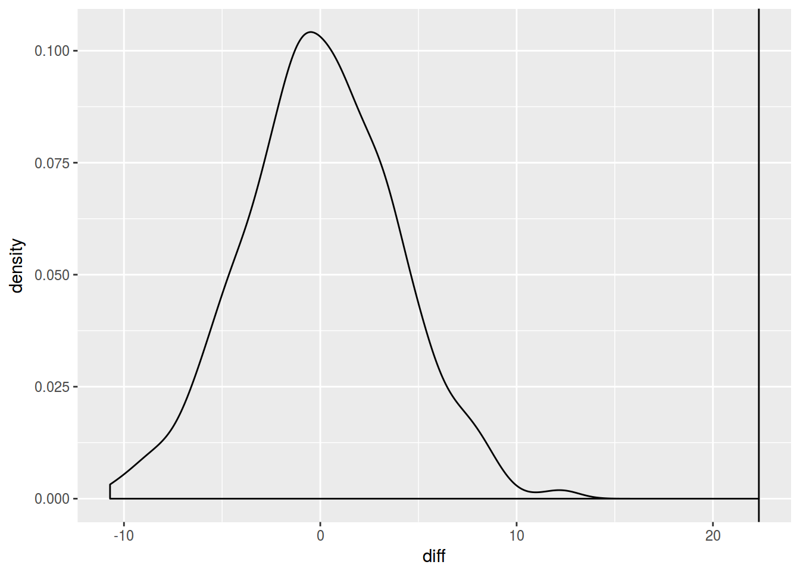

Lab 16
Assignment link
library(tidyverse)
df <- read.csv("https://goo.gl/7gIjvK")
df %>%
filter(aspiration == "yes",speaker == "tt01") %>%
select(vowel.dur) ->
asp_vowel_duration
library(bootstrap)
set.seed(42)
bootsraped_1 <- bootstrap(asp_vowel_duration$vowel.dur,
nboot = 1000,
theta = mean)
asp_vowel_duration %>%
summarise(mean = mean(vowel.dur),
ci = 1.96*sd(vowel.dur)/n(),
mean_ci_p = mean + ci,
mean_ci_m = mean - ci) ->
ci
data.frame(thetastar = bootsraped_1$thetastar) %>%
ggplot(aes(thetastar))+
geom_rug(data=asp_vowel_duration, aes(vowel.dur))+
geom_vline(xintercept = c(ci$mean_ci_p, ci$mean_ci_m), linetype = 2)+
geom_density()# 2 -----------------------------------------------------------------------
library(mosaic)
df %>%
filter(speaker == "tt01") %>%
select(vowel.dur, aspiration) ->
vowel_duration
set.seed(42)
do(1000) * (
vowel_duration %>%
mutate(vowel.dur = shuffle(vowel.dur)) %>%
group_by(aspiration) %>%
summarise(mean_value = mean(vowel.dur))) ->
many.shuffles
vowel_duration %>%
group_by(aspiration) %>%
summarise(mean_value = mean(vowel.dur))->
diff_original
many.shuffles %>%
group_by(.index) %>%
summarise(diff = diff(mean_value)) ->
shuffle.diff
observed_difference <- abs(diff(diff_original$mean_value))
shuffle.diff %>%
mutate(result = diff >= observed_difference) %>%
count(result)shuffle.diff %>%
ggplot(aes(diff))+
geom_density()+
geom_vline(xintercept = observed_difference)